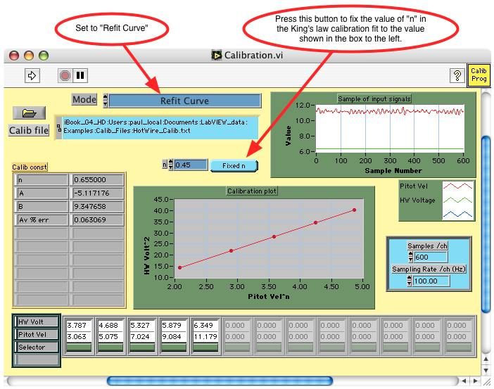

Click on the Calibration.vi to make it the active window or select it from the LabVIEW Window menu bar
Click on the Run arrow to Refit the calibration after typing in the desired value for n
The Calibration.vi should now show the calibration curve refitted using the fixed value of n

The Av % err in the curve fit has increased from 0.063% to 1.7% by fixing the value of nto 0.45. It is usually recommended that the value of n is allowed to be determined by calibration.vi since this will achieve the best quality fit.
By clicking on the Fixed n button which changes it to Find best n, then running the Calibration.vi in the Refit Curve mode, the best value of n will once again be found.